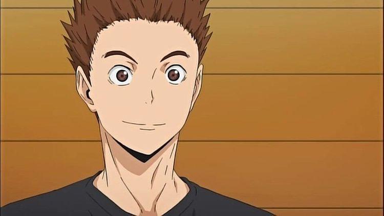
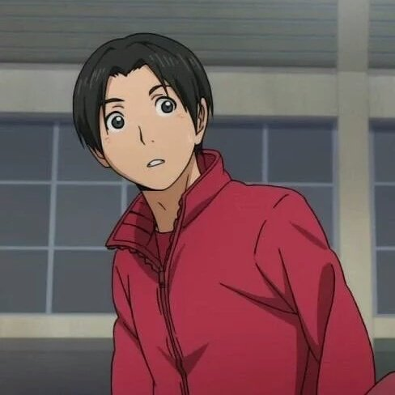
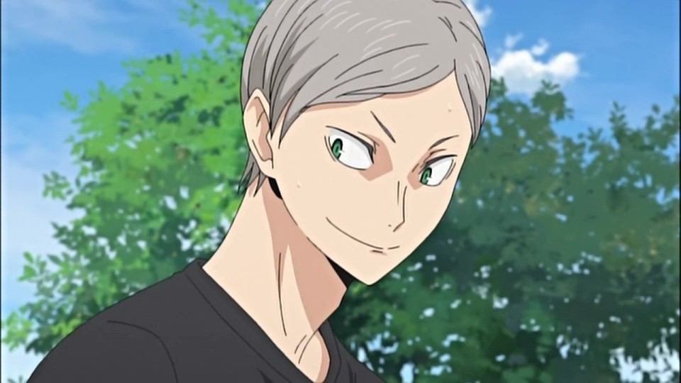
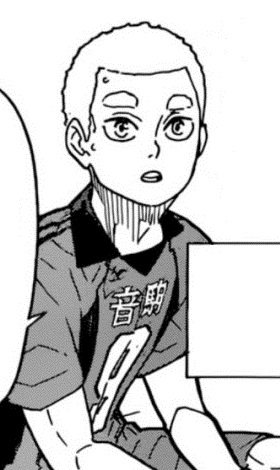
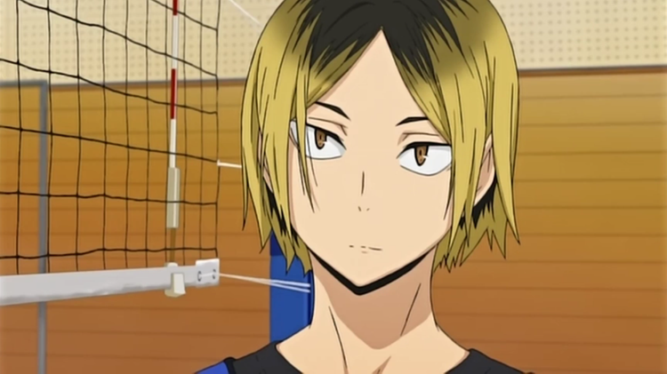
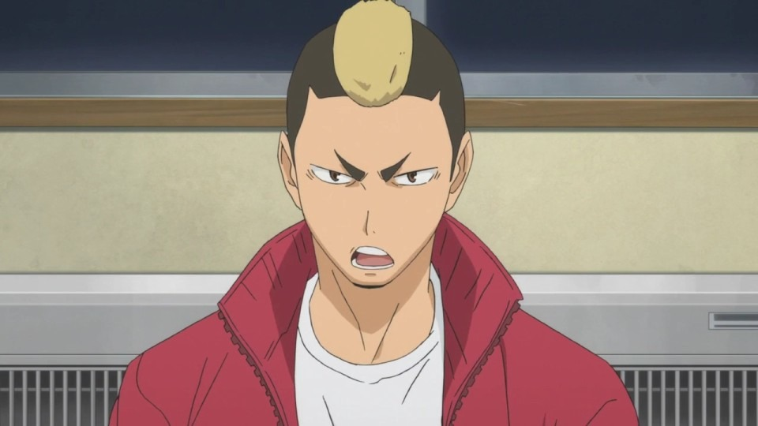
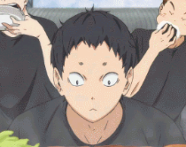
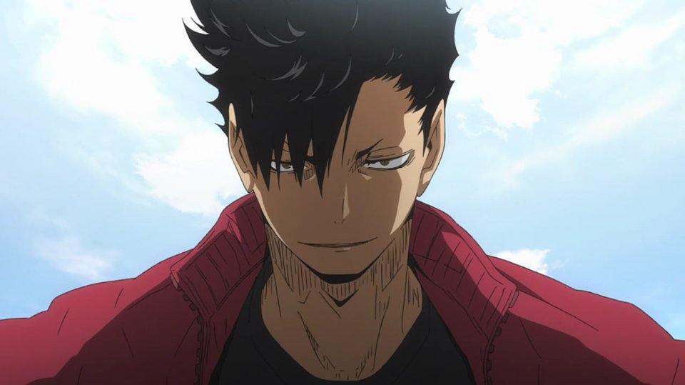
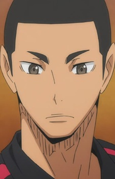
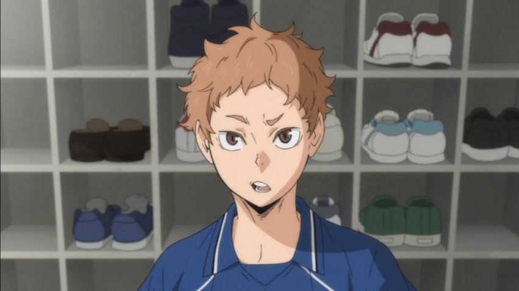

히나타와 비슷하게 밝고 사교적인 성격을 가지고 있다. 리에프처럼 직설적이라서, 히나타를 처음 보고 작다고 대놓고 말했다. 이에 히나타는 얕보지 말라 했지만, 이누오카는 얕보는 게 아니라고 웃으며 답했다. 리에프에게 주전 자리를 빼앗겼음에도 악감정을 가지지 않고, 오히려 자기가 더 열심히 해야겠다며 리에프를 응원하는 착한 심성을 가지고 있다.
예비해 둔 리베로지만 늘기 위해서 노력을 거듭하고 있다. 성격은 밝고 남보다 배나 성실하다. 벤치에 있지만 경기 중에도 네코마타에게 여러가지 말을 걸고 가르침을 청하면서 성장을 거듭하고 있다.'아무리 1학년이라지만 자진해서 여름 합숙 중 타학교의 점수를 직접 정리하는 것을 보아 세심하고 성실한 모양.
러시아인과 일본인의 혼혈이라서 은발에 녹안을 가지고 있다. 다만 일본에서 나고 자라서 러시아어는 못한다고 한다(Лев의 뜻은 사자)말을 가려 하지 않는 편이다. 본인이 말하길 나쁜 뜻은 없다고 하는데, 태도나 말투를 보면 정말로 악의는 느껴지지 않는다.
전국대회편에서 처음 등장한 네코마의 1학년 보결 세터이다.천장 서브를 할 줄 안다. 작중 두번째로 천장 서브를 한 캐릭터. 첫번째는 츠바키하라 학원의 히메카와. 그래서 연재분 240화 때 켄마가 천장 서브를 하는 츠바키하라를 보고 표정을 찡그린 것. 임팩트가 줄어들기 때문.
내성적이고 붙임성이 없는 성격이다.한두 살의 나이차까지 칼같이 따지는 체육계 특유의 상하 관계를 좋아하지 않는다. 적극적인 성격이 아니라서 친구도 쿠로오 정도라고 생각했었지만 쿠로오가 졸업해도 계속 배구를 할 것 같은 대사하는 것을 보아 팀원들에게도 많이 정을 붙인 모양. 사람과 어울리는 것을 꺼리면서 타인의 시선을 매우 신경쓰기 때문에 어릴 때부터 늘 신경을 곤두세우고 있었다고 한다.
1학년 때에는 켄마와 정반대 스타일로 이분과 이분의 코스를 똑같이 밟아 서로 견제하고 경쟁하기 일쑤였다.'네코마의 타나카'라고 칭할 수 있을 정도로 타나카와 성격이 비슷하다. 평소에는 시끄럽고 다혈질이라 쉽게 흥분하지만 경기 중에는 정신력이 강하다. 거친 외견과는 달리 여자를 대할 때는 소심해진다.
목소리 듣기가 하늘의 별따기인 애 말이 없어서[4] 꽤 비중을 차지하고 있음에도 사람들이 잘 알지 못한다. 본인은 야마모토가 말 좀 많이 하라고 한다는 게 고민이라지만 팬들은 후쿠나가가 한 문장이라도 말을 하는 게 소원이라고 한다.말이 없고 초연한 모습이라 쉽게 종잡을 수가 없지만 공격과 수비 모두 평균적으로 수준이 높은 좋은 선수다.
주장으로서 책임감, 리더십이 있으며 팀메이트들로부터 신뢰받고 있다. 속도 깊으며 성숙한 성격이다.다만 사와무라는 쿠로오와 생글생글 웃으며 악수 한 번 했을 뿐인데, 쿠로오에 대해 '방심할 수 없는 타입'이라고 정확히 판단했다. 문제는 쿠로오도 사와무라에 대해 똑같은 평가를 내렸다는 것. 둘 다 사람은 제대로 봤다.
프로필 사진과는 다르게 인자한 성품을 지니고 있다. 처음 카라스노와의 연습 시합 후 다들 비슷한 포지션끼리 대화를 나눌 때 카라스노에서 아빠 역할을 맡은 다이치와 대화를 나누었고, 켄마가 낯을 가리지 않고 대화하는 것을 보고 눈물을 글썽이는 야쿠 옆에서 흐뭇하게 웃으며 고개를 끄덕이는 등 네코마의 아빠 같은 포지션으로 많이 등장했다.
네코마의 챙김이이자 어머니 포지션이다. 켄마가 재채기를 하자 얼른 티슈를 꺼내주기도 하고, 인터하이 이후 열린 합동 합숙훈련에서 켄마가 히나타와 낯가림 없이 대화하는 걸 보고 눈물을 글썽이며 기뻐하기도 한다. 팀의 뒤치다꺼리를 많이 맡는 포지션이지만 성격은 니시노야처럼 터프한 편.
